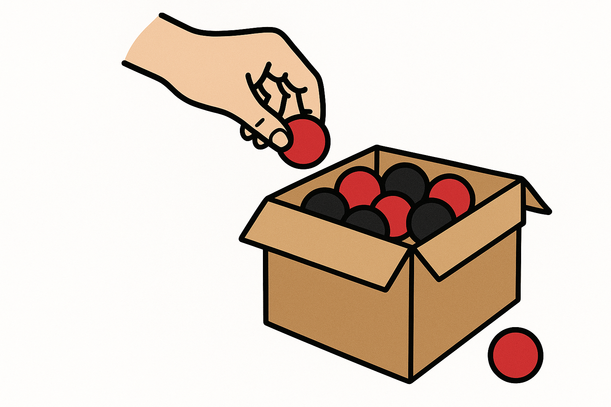

1 Definição do problema
Em modelos de regressão e classificação básicos, supomos que os dados são i.i.d: variaveis aleatórias independentes e identicamente distribuidas. Ou seja, a ordem que observamos os dados não tem nenhum impacto em nossa habilidade de prever quais serão as próximas observações.
Vamos considerar um experimento simples: temos uma caixa com bolas pretas e vermelhas dentro. Digamos que as bolas pretas valem 1 e as bolas vermelhas valem 0. Queremos descobrir qual a quantidade de pontos vamos ter na próxima rodada.

Se as bolas estão distribuidas aleatóriamente dentro da caixa, podemos esperar ver algo como a seguinte sequência de pontos:
\[ \{0, 1, 1, 0, 1, 0, 0, \dots \} \]
Nesse caso, a ordem dos pontos não importa. Não importa o que vimos até então; a próxima bola que vamos tirar da caixa é independente das bolas que já tiramos.
Vamos supor um caso ligeiramente diferente. Agora, as bolas estão organizadas em blocos: primeiro todas as bolas pretas, depois todas as bolas vermelhas, depois todas as bolas pretas de novo, e assim por diante. Nesse caso, podemos esperar ver algo como:
\[ \{1, 1, 1, 0, 0, 0, 1, 1, 1, \dots \} \]
Nesse caso, a ordem dos pontos importa. Se vimos muitas bolas pretas recentemente, é mais provável que vejamos uma bola preta na próxima rodada. A próxima bola que vamos tirar da caixa depende das bolas que já tiramos. Esse é um caso básico de aplicação de modelos de previsão de séries temporais.
Considerando que cada observação é indexada por uma variável temporal, podemos definir uma série temporal como uma sequência de observações ordenadas no tempo. Exemplos comuns de séries temporais incluem:
- Varejo: vendas diárias, semanais ou mensais de um produto
- Finanças: preços diários de ações, taxas de câmbio
- Saúde: número diário de novos casos de uma doença
- Clima: temperatura diária, precipitação mensal
Esse livro é uma introdução prática a modelos de séries temporais, com objetivo de dar contexto das ferramentas mais relevantes em 3h de leitura.
O conteúdo está organizado nas seguintes seções:
- Introdução a séries temporais:
- Modelo Naive, Modelo Naive sazonal
- Séries integradas, diferenciação e estacionariedade
- Modelo de Suavização Exponencial (Exponential Smoothing)
- Modelos autoregressivos (AR)
- Métricas de avaliação de modelos de séries temporais
- Engenharia de features para séries temporais
- Modelos avançados e caso de uso
- Forecast com modelos de Machine Learning
- Forecast com modelos fundacionais
- Previsão de vendas totais agregadas
- Previsão de vendas por região e modelos globais
- Previsão hierárquica e reconciliação
- Customização de modelos com sktime
- Como customizar e criar modelos em sktime
- Criando um wrapper de biblioteca externa